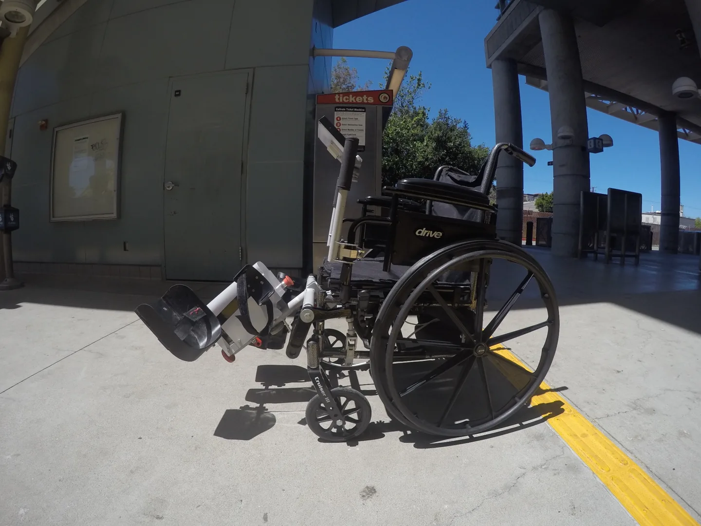

PROTOTYPE DOCUMENTATION
LegMaker photo gallery.
Four original outdoor photographs supplied by Rehabwheel, including two versions of the wheelchair side view. Select a photo to open the full image.




Development hardware shown; product configuration may change.